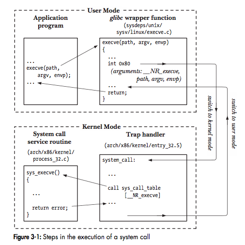

Linux系统调用(System Calls)流程
前言
系统调用（System Calls）是受约束的内核入口，允许进程控制内核来完成指定的操作。内核提供了一系列的系统调用API（Application Programming Interface）来完成相关的功能，例如创建进程、执行I/O操作、创建用于进程间通信的管道等。
关于系统调用，这里需要掌握三点基本常识：
系统调用会将处理器的状态由用户态（User Mode）转变为内核态（Kernel Mode）
系统调用的集合是固定的，每一个系统调用由一个唯一的数字标识（这个数字通常对程序是不可见的）
系统调用可能包含一系列的参数，用于指定哪些信息需要从用户空间传递到内核空间
系统调用过程分解
从编程的角度来看，发起一次系统调用和调用一个C函数无异，然而在这背后，一次系统调用包含了很多的步骤。为了清晰的说明整个流程，就以x86-32架构上的实现为例：
应用程序通过调用C库(C Library)中的包装函数(wrapper function)，发起系统调用；
这个包装函数必须保证所有的参数对于系统调用是可用的，参数通过栈(Stack)
传递给包装函数，但是对于内核来说，需要它们存储在指定的寄存器内，此时包装函数会将这些参数拷贝到这些指定的寄存器内；由于所有系统调用都是以同样的方式进入内核，内核需要用某种方式来区分这些不同的系统调用。因此，包装函数还会拷贝系统调用的数字标识到指定的CPU寄存器(
%eax)中；包装函数执行
trap机器指令(int 0x80)，将处理器由用户态切换至内核态，并执行0x80位置的系统向量指向的代码；
（如今很多x86-32架构实现了sysenter指令，为用户态内核态切换提供了一种更快速的方式。sysenter的支持起始于2.6版本内核和glibc 2.3.2）为了响应这一次调用，内核调用它的
system_call()例程(system_call()routine)：
a) 将寄存器中的值保存在内核栈中
b) 检查系统调用数字标识的合法性
c) 根据内核变量sys_call_table找到对应的系统调用服务例程(service routine)。如果它包含了参数，则首先检查参数的合法性，然后继续执行必要的流程。比如修改参数中指定位置的值，并进行用户空间和内核空间的数据传递（I/O操作）。最后，服务例程向system_call()例程返回结果状态
d) 从内核栈中恢复寄存器中的值，并将系统调用返回值置入栈中
e) 返回到包装函数，并将处理器切换回用户态如果系统调用服务例程(system call service routine)的返回值表示了一个异常(error)，则包装函数将全局变量
errno设置为该值。然后包装函数将这个值返回给调用者，用于告知这次系统调用的状态是成功还是失败；

参考
- The Linux Programming Interface [3.1 System Calls]